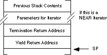
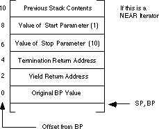
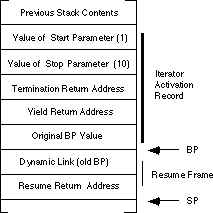

|
Table of Content | Chapter Twelve (Part 7) |
|
Table of Content | Chapter Twelve (Part 7) |
| CHAPTER TWELVE: PROCEDURES: ADVANCED TOPICS (Part 6) |
| 12.5 -
Iterators 12.5.1 - Implementing Iterators Using In-Line Expansion 12.5.2 - Implementing Iterators with Resume Frames |
12.5 Iterators |
An iterator is a cross between a control structure and a function. Although common high level languages do not often support iterators, they are present in some very high level languages[11]. Iterators provide a combination state machine/function call mechanism that lets a function pick up where it last left off on each new call. Iterators are also part of a loop control structure, with the iterator providing the value of the loop control variable on each iteration.
To understand what an iterator is, consider the following for
loop from Pascal:
for I := 1 to 10 do <some statement>;
When learning Pascal you were probably taught that this
statement initializes i with one, compares i with 10, and
executes the statement if i is less than or equal to 10. After executing the
statement, the for statement increments i and compares it with
10 again, repeating the process over and over again until I is greater than 10.
While this description is semantically correct, and indeed,
it's the way that most Pascal compilers implement the for loop, this is not
the only point of view that describes how the for loop operates. Suppose,
instead, that you were to treat the "to" reserved word as an
operator. An operator that expects two parameters (one and ten in this case) and returns
the range of values on each successive execution. That is, on the first call the "to"
operator would return one, on the second call it would return two, etc. After the tenth
call, the "to" operator would fail which would terminate the loop.
This is exactly the description of an iterator.
In general, an iterator controls a loop. Different languages use different names for iterator controlled loops, this text will just use the name foreach as follows:
foreach variable in iterator() do statements; endfor;
Variable
is a variable whose type is compatible with
the return type of the iterator. An iterator returns two values: a boolean
success or failure value and a function result. As long as the iterator returns success,
the foreach statement assigns the other return value to variable
and executes statements. If iterator returns failure, the
foreach loop terminates and executes the next sequential statement following the foreach
loop's body. In the case of failure, the foreach statement does not affect
the value of variable.
Iterators are considerably more complex than normal functions. A typical function call involves two basic operations: a call and a return. Iterator invocations involve four basic operations:
1) Initial iterator call
2) Yielding a value
3) Resumption of an iterator
4) Termination of an iterator.
To understand how an iterator operates, consider the following short example from the Panacea programming language[12]:
Range:iterator(start,stop:integer):integer;
begin range;
while (start <= stop) do
yield start;
start := start + 1;
endwhile;
end Range;
In the Panacea programming language, iterator calls may only appear in the foreach statement. With the exception of the yield statement above, anyone familiar with Pascal or C++ should be able to figure out the basic logic of this iterator.
An iterator in the Panacea programming language may return
to its caller using one of two separate mechanisms, it can return to the caller, by
exiting through the end Range; statement or it may yield a value by executing
the yield statement. An iterator succeeds if it executes the yield
statement, it fails if it simply returns to the caller. Therefore, the foreach
statement will only execute its corresponding statement if you exit an iterator with a yield.
The foreach statement terminates if you simply return from the iterator. In
the example above, the iterator returns the values start..stop via a yield
and then the iterator terminates. The loop
foreach i in Range(1,10) do
write(i);
endfor;
is comparable to the Pascal statement:
for i := 1 to 10 do write(i);
When a Panacea program first executes the foreach
statement, it makes an initial call to the iterator. The iterator runs until it executes a
yield or it returns. If it executes the yield statement, it
returns the value of the expression following the yield as the iterator
result and it returns success. If it simply returns, the iterator returns failure and no
iterator result. In the current example, the initial call to the iterator returns success
and the value one.
Assuming a successful return (as in the current example),
the foreach statement assigns the iterator return value to the loop control
variable and executes the foreach loop body. After executing the loop body,
the foreach statement calls the iterator again. However, this time the
foreach statement resumes the iterator rather than making an initial call. An iterator
resumption continues with the first statement following the last yield it
executed. In the range example, a resumption would continue execution at the start
:= start + 1; statement. On the first resumption, the Range iterator
would add one to start, producing the value two. Two is less than ten (stop's
value) so the while loop would repeat and the iterator would yield the value
two. This process would repeat over and over again until the iterator yields ten. Upon
resuming after yielding ten, the iterator would increment start to eleven and then return,
rather than yield, since this new value is not less than or equal to ten. When the range
iterator returns (fails), the foreach loop terminates.
12.5.1 Implementing Iterators Using In-Line Expansion
The implementation of an iterator is rather complex. To begin with, consider a first attempt at an assembly implementation of the foreach statement above:
push 1 ;Assume 286 or better
push 10 ; and parms passed on stack.
call Range_Initial ;Make initial call to iter.
jc Failure ;C=0, 1 means success, fail.
ForLoop: puti ;Assume result is in AX.
call Range_Resume ;Resume iterator.
jnc ForLoop ;Carry clear is success!
Failure:
Although this looks like a straight-forward implementation
project, there are several issues to consider. First, the call to Range_Resume
above looks simple enough, but there is no fixed address that corresponds to the resume
address. While it is certainly true that this Range example has only one
resume address, in general you can have as many yield statements as you like in an
iterator. For example, the following iterator returns the values 1, 2, 3, and 4:
OneToFour:iterator:integer;
begin OneToFour;
yield 1;
yield 2;
yield 3;
yield 4;
end OneToFour;
The initial call would execute the yield 1; statement.
The first resumption would execute the yield 2; statement, the second
resumption would execute yield 3;, etc. Obviously there is no single resume
address the calling code can count on.
There are a couple of additional details left to consider.
First, an iterator is free to call procedures and functions[13].
If such a procedure or function executes the yield statement then resumption
by the foreach statement continues execution within the procedure or function
that executed the yield. Second, the semantics of an iterator require all
local variables and parameters to maintain their values until the iterator terminates.
That is, yielding does not deallocate local variables and parameters. Likewise, any return
addresses left on the stack (e.g., the call to a procedure or function that executes the yield
statement) must not be lost when a piece of code yields and the corresponding foreach
statement resumes the iterator. In general, this means you cannot use the standard call
and return sequence to yield from or resume to an iterator because you have to preserve
the contents of the stack.
While there are several ways to implement iterators in assembly language, perhaps the most practical method is to have the iterator call the loop controlled by the iterator and have the loop return back to the iterator function. Of course, this is counter-intuitive. Normally, one thinks of the iterator as the function that the loop calls on each iteration, not the other way around. However, given the structure of the stack during the execution of an iterator, the counter-intuitive approach turns out to be easier to implement.
Some high level languages support iterators in exactly this fashion. For example, Metaware's Professional Pascal Compiler for the PC supports iterators[14]. Were you to create a code sequence as follows:
iterator OneToFour:integer;
begin
yield 1;
yield 2;
yield 3;
yield 4;
end;
and call it in the main program as follows:
for i in OneToFour do writeln(i);
Professional Pascal would completely rearrange your code.
Instead of turning the iterator into an assembly language function and call this function
from within the for loop body, this code would turn the for loop body into a
function, expand the iterator in-line (much like a macro) and call the for
loop body function on each yield. That is, Professional Pascal would probably
produce assembly language that looks something like the following:
; The following procedure corresponds to the for loop body
; with a single parameter (I) corresponding to the loop
; control variable:
ForLoopCode proc near
push bp
mov bp, sp
mov ax, [bp+4] ;Get loop control value and
puti ; print it.
putcr
pop bp
ret 2 ;Pop loop control value off stk.
ForLoopCode endp
; The follow code would be emitted in-line upon encountering the
; for loop in the main program, it corresponds to an in-line
; expansion of the iterator as though it were a macro,
; substituting a call for the yield instructions:
push 1 ;On 286 and later processors only.
call ForLoopCode
push 2
call ForLoopCode
push 3
call ForLoopCode
push 4
call ForLoopCode
This method for implementing iterators is convenient and produces relatively efficient (fast) code. It does, however, suffer from a couple drawbacks. First, since you must expand the iterator in-line wherever you call it, much like a macro, your program could grow large if the iterator is not short and you use it often. Second, this method of implementing the iterator completely hides the underlying logic of the code and makes your assembly language programs difficult to read and understand.
12.5.2 Implementing Iterators with Resume Frames
In-line expansion is not the only way to implement iterators. There is another method that preserves the structure of your program at the expense of a slightly more complex implementation. Several high level languages, including Icon and CLU, use this implementation.
To start with, you will need another stack frame: the
resume frame. A resume frame contains two entries: a yield return address (that is, the
address of the next instruction after the yield statement) and a dynamic
link, which is a pointer to the iterator's activation record. Typically the dynamic link
is just the value in the bp register at the time you execute the yield
instruction. This version implements the four parts of an iterator as follows:
1) A call instruction for the initial iterator
call,
2) A call instruction for the yield
statement,
3) A ret instruction for the resume operation,
and
4) A ret instruction to terminate the
iterator.
To begin with, an iterator will require two return addresses rather than the single return address you would normally expect. The first return address appearing on the stack is the termination return address. The second return address is where the subroutine transfers control on a yield operation. The calling code must push these two return addresses upon initial invocation of the iterator. The stack, upon initial entry into the iterator, should look something like this:

As an example, consider the Range iterator
presented earlier. This iterator requires two parameters, a starting value and an ending
value:
foreach i in Range(1,10) do writeln(i);
The code to make the initial call to the Range
iterator, producing a stack like the one above, could be the following:
push 1 ;Push start parameter value.
push 10 ;Push stop parameter value.
push offset ForDone ;Push termination address.
call Range ;Pushes yield return address.
ForDone is the first statement immediately following the foreach loop, that is, the instruction to execute when the iterator returns failure. The foreach loop body must begin with the first instruction following the call to Range. At the end of the foreach loop, rather than jumping back to the start of the loop, or calling the iterator again, this code should just execute a ret instruction. The reason will become clear in a moment. So the implementation of the above foreach statement could be the following:
push 1 ;Obviously, this requires a
push 10 ; 80286 or later processor.
push offset ForDone
call Range
mov bp, [bp] ;Explained a little later.
puti
putcr
ret
ForDone:
Granted, this doesn't look anything at all like a loop. However, by playing some major tricks with the stack, you'll see that this code really does iterate the loop body (puti and putcr) as intended.
Now consider the Range iterator itself, here's the code to do the job:
Range_Start equ word ptr <[bp+8]> ;Address of Start parameter.
Range_Stop equ word ptr <[bp+6]> ;Address of Stop parameter.
Range_Yield equ word ptr <[bp+2]> ;Yield return address.
Range proc near
push bp
mov bp, sp
RangeLoop: mov ax, Range_Start ;Get start parameter and
cmp ax, Range_Stop ; compare against stop.
ja RangeDone ;Terminate if start > stop
; Okay, build the resume frame:
push bp ;Save dynamic link.
call Range_Yield ;Do YIELD operation.
pop bp ;Restore dynamic link.
inc Range_Start ;Bump up start value
jmp RangeLoop ;Repeat until start > stop.
RangeDone: pop bp ;Restore old BP
add sp, 2 ;Pop YIELD return address
ret 4 ;Terminate iterator.
Range endp
Although this routine is rather short, don't let its size deceive you; it's quite complex. The best way to describe how this iterator operates is to take it a few instructions at a time. The first two instructions are the standard entry sequence for a procedure. Upon execution of these two instructions, the stack looks like:

The next three statements in the Range
iterator, at label RangeLoop, implement the termination test of the while
loop. When the Start parameter contains a value greater than the Stop
parameter, control transfers to the RangeDone label at which point the code
pops the value of bp off the stack, pops the yield return address off the
stack (since this code will not return back to the body of the iterator loop) and then
returns via the termination return address that is immediately above the yield return
address on the stack. The return instruction also pops the two parameters off the stack.
The real work of the iterator occurs in the body of the
while loop. The push, call, and pop instructions
implement the yield statement. The push and call instructions
build the resume frame and then return control to the body of the foreach loop. The call
instruction is not calling a subroutine. What it is really doing here is finishing off the
resume frame (by storing the yield resume address into the resume frame) and then it
returns control back to the body of the foreach loop by jumping indirect
through the yield return address pushed on the stack by the initial call to the iterator.
After the execution of this call, the stack frame looks like:

Also note that the ax register contains the
return value for the iterator. As with functions, ax is a good place to
return the iterator return result.
Immediately after yielding back to the foreach
loop, the code must reload bp with the original value prior to the iterator
invocation. This allows the calling code to correctly access parameters and local
variables in its own activation record rather than the activation record of the iterator.
Since bp just happens to point at the original bp value for the
calling code, executing the mov bp, [bp] instruction reloads bp
as appropriate. Of course, in this example reloading bp isn't necessary
because the body of the foreach loop does not reference any memory locations off the bp
register, but in general you will need to restore bp.
At the end of the foreach loop body the ret
instruction resumes the iterator. The ret instruction pops the return address
off the stack which returns control back to the iterator immediately after the call. The
instruction at this point pops bp off the stack, increments the Start
variable, and then repeats the while loop.
Of course, this is a lot of work to create a piece of code
that simply repeats a loop ten times. A simple for loop would have been much easier and
quite a bit more efficient that the foreach implementation described in this section. This
section used the Range iterator because it was easy to show how iterators
work using Range, not because actually implementing Range as an
iterator is a good idea.
[11] Ada and PL/I support very limited forms of iterators, though they do not support the type of iterators found in CLU, SETL, Icon, and other languages.
[12] Panacea is a very high level language developed by Randall Hyde for use in compiler courses at UC Riverside.
[13] In Panacea an iterator could also call other types of program units, including other iterators, but you can ignore this for now.
[14] Obviously, this is a non-standard extension to the Pascal programming language provided in Professional Pascal.
|
Table of Content | Chapter Twelve (Part 7) |
Chapter Twelve: Procedures: Advanced
Topics (Part 6)
27 SEP 1996